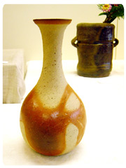
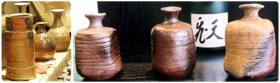
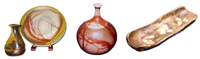
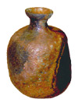
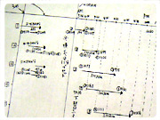
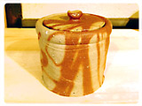
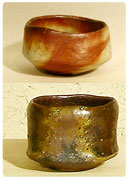
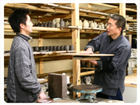

| Mamoru Taku
Japanese potter; Article by Kiyomi
Noma
An Encounter with Organic Beauty II

Landscapes, Drawn by Fire
One of the characteristics of Bizen-ware is that there are no paintings
or intentional glazes on the ceramics. Instead of these man-made
finishes, Bizen-ware has patterns drawn by the force of the fire.
Based upon the patterns (or 'landscapes' in pottery terminology,)
they are categorised into the following; 'Sangiri (oxidised),''Hidasuki
(fire patterned),' 'Botamochi (rice-cake patterned)' and 'Goma (ash
covered).'
 Landscapes
on Bizen potteries
(opens in new window) Landscapes
on Bizen potteries
(opens in new window)


Taku-san also applies his principle, of having the 'Right-thing-in-the-right-place,'
to create the landscapes. He stated that it's not just fire that
makes landscapes, but also factors such as clay and shaping. An
holistic balance throughout the creative process produces more harmonised
works.
Even as early on as selecting the clay, Taku-san has the design
of landscapes in his mind already. Based upon the design, he uses
the most suitable shaping techniques and firing environment.
"Rather than making arbitrary finishes caused by unbalanced forces,
I try to control 98% of the colour, landscape and shape results.
I leave 2% to nature's hands."
Taku-san explained to me as I was looking at a 'Kigoma (Yellowish
Ash-covered)' Tokkuri (Sake Vessel), which had a small bluish glaze.
"That glaze is developed with melted ash that dropped from the kiln
ceiling. I expected it would happen, though I did not want it to.
I can still enjoy this natural creation. If the unexpected creation
goes beyond two percent, then I would consider the work to be a
failure and you would not see it on the shelf."
The 'Goma' Sake Vessel has a yellowish ash-covering layer shimmering
on the surface of a dark brown base clay colour. It has multiple
flavours like toffee. The flavour from the top layer has melted
into the core layer of work.

"I applied a technique called 'Imbete' to that particular piece.
Imbete is a method where a layer of clay is placed on top of pre-fired
potteries. I started seriously working with this method over ten
years ago. It gives me a very different perspective."
From the conversation with Taku-san, I envisioned that the Imbete
technique was a little similar to the process of making the German
cake 'Baum Kuchen' where one layer at a time is baked, before the
next is poured on.
Although there are critics who claim 'Imbete' is an ugly patchwork
technique, Taku-san's years of research and achievement bring out
an artistic harmony from the core and covering layers of these pieces.
Learn
about 'Imbete' Technique
(opens in new window)
Tiers of Experience and
Drawers of Logic
"I entered the pottery world in my mid twenties. My background was
in machine design, not in pottery."
Taku-san visited a Bizen potter by chance. The potter let Taku-san
wheel a work and he enjoyed the experience a greatly.
"At that time, I thought 'Wow. There is a profession like this.'
Gradually, the 'wow' become a reality in me and a year after my
first wheeling experience, I was at the entrance to the Bizen pottery
world."
"Compared to those who started pottery as a family profession, I
had many disadvantages in my knowledge and experience. I filled
these gaps by making countless trials and spending hours conducting
research. The advantage I did have was some useful experience from
my previous profession. The logical perspective from my training
helped me understand the features of ceramics from a different approach,
such as classifying the character of clay from the geographical
condition of the site."

Taku-san has been keeping records of his production data such as
different clay blends and firing environments.
"They are simply revisionary records to confirm whether what has
been done was appropriate or not. The Important point is how YOU
diagnose what to apply, not the data itself."
Those records are just tiny bits of what Taku-san has built up around
him. There are no short cuts here, just years experience and drawers
of knowledge.
The Sophistication of Tea


There are two categories of works in Taku-san's collection, the
introductory works and the classic works. Taku-san expresses his
debt to the old Bizen masterpieces in his classic collections, which
include various items for tea ceremonies, such as water jars and
tea bowls.
"Tea ceremony ceramics are one of the most challenging categories
for me. As Bizen-ware is elevated to this level of sophistication
by tea masters. You would find extreme dignity in old tea wares,
especially those made in Momoyama period, in the 16th century.
Before this time Bizen-ware was produced only for everyday utensils.
The Momoyama period is culturally significant in Japan's history
for the development of highly sophisticated aestheticism such as
'Wabi Sabi' in the way of tea. Sen Rikyu, the great tea master found
an earthy beauty in Bizen-ware and started using these ceramics
for tea ceremonies. Since then, Bizen potters have been asked to
make organic yet sophisticated potteries to meet the tough requirements
from tea masters."
"I wondered how these items were used in tea ceremonies and started
lessons with a tea master. You need to follow a strict code of manners
during a tea ceremony, such as placing the tea bowl in the correct
position after making tea. They all make sense if you come to know
the original meaning which is rooted in natural movement. For instance,
the placement of the tea bowl is set as it is, simply because it
is the most natural way.
Also, tea ceremonies are the form of composite art that expresses
hospitality. Tea utensils play an assisting role to serve the guest
in the ceremony.
Bizen-ware is one of the best pottery styles in its natural character
to play this role, modestly assisting the hospitality from the tea
host.
In this sense, the influence of the way of tea and Wabi Sabi is
indispensable in the growth of Bizen. The spirit, which Sen Rikyu
advocated in 'Wabi Sabi', of hospitality, philosophy and aesthetics
is the core essence of my pottery as well."
Challenges
to Old Bizen masterpieces
I heard Taku-san talk of 'old Bizen masterpieces' as his goal and
I wondered how exactly they inspired him.
"Well, these days I describe myself as a potter, but in the early
days, I thought of myself as a contemporary Bizen artist."
"After three years of training, I launched my own studio. I started
to express myself in my work. I created all sorts of contemporary
Bizen-ware that attempted to go beyond the influence of my master.
It was exciting at the beginning and my clients found my works interesting.
However, I soon found myself getting bored. I could not keep up
my enthusiasm and I felt myself to be in a deadlock."
"I started to look for a genuine axis that could keep me inspired.
The old Bizen masterpieces held the answer. The authentic beauty
never changed over centuries of time. This lasting magnetism certainly
keeps attracting people including me beyond history. This is how
I started to climb the mountain of old Bizen masterpieces."
"As my steps went forward, I realized that if I only followed the
masterpieces, I would be lost in the massive power of them. So,
I fixed my aim to bring the essence of authentic dignity in these
masterpieces into my own work."
"The mountain is extremely genuine and enormously profound. I am
fortunate enough to be on it. I have not had a second to get bored
ever since."
"Time is indeed too short to achieve all I would like to in my lifetime.
I understand now why potters are trained in an apprenticeship system."
Soils to Pass On

In the studio, Taku-san was showing precise solutions to the questions
his son, Shusaku raised. Overhearing their technical discussions,
I felt that they share a lot beyond the master and the disciple
relationship. It was more like a collaboration.
"It has been three years since my son started working with me. I
did not have him directly into my studio. If I had done, he would
be influenced by my current work before developing his own ideas
and creations. So, he went to a school specializing in porcelain
outside Bizen."
"As he started to work with me, I made it clear to him to utilise
my path as a stepping stone to make his own step forward. As long
as he understands my themes and perspectives and shares them with
me, then I can give him as many tips as he needs. He can acquire
highly condensed experience, efficiently from the trials I have
made over the last twenty years. While he works with me, he shall
follow my way and ultimately go beyond me.
However, I would not force him to follow me if he does not wish
to. "
Shusaku seems to be proud of his master and father. I could see
his respect for the clay is as high as his master's from the way
he works with it. I am not the only one to notice this, as Shusaku
has received a series of best prizes for his works.
"The mission of potters could be similar to farmers. Potters
deliver the best harvest as a result of proper cultivation. They
then pass on the nutritious soil to the next generation."
"Having Shusaku as my partner encourages me to challenge myself
further. I can share all my experience with him, and do not have
to worry about failure. Even if I am not able to, Shusaku can turn
my failures into something fruitful."
Article and images courtesy Kiyomi Noma and wazen-online.
© wazen-online.
Previous page
> An Encounter with Organic Beauty
More on Mamoru Taku
Mamoru
Taku's biography
View
Mamoru Taku's Collection
View
Mamoru Taku's Special Collection
Takebe
- Mamoru Taku's Studio
Learn
about the "Himo-tsukuri" Method
Landscapes
on Bizen potteries
More Artists of the Week
More Articles
|